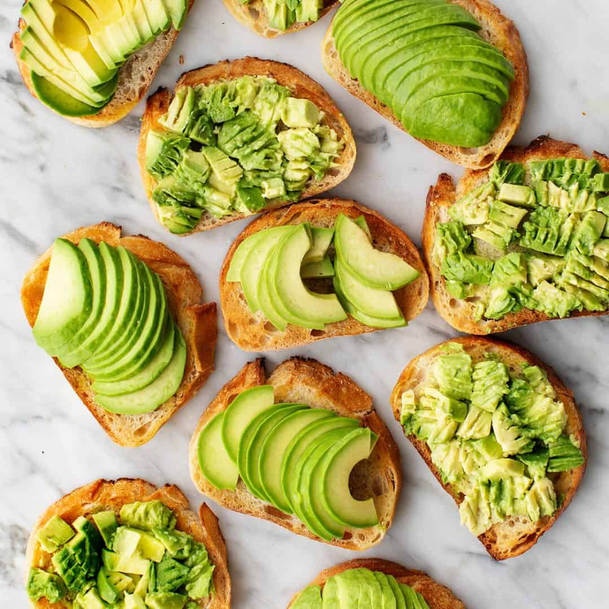

Avocado Toast

Description
When avocado toast came onto the scene years ago, lots of people wrote it off as a trend. But as someone who still eats it for breakfast or lunch a few times a week, I have to say that I think avocado toast is here to stay! It’s super easy to make, it’s healthy and satisfying, and it’s a blank canvas for flavorful seasonal toppings. What’s not to love?
Ingredients
- 1 ripe avocado
- Lemon wedge, for squeezing
- Sea salt
- 2 to 4 slices toasted bread
- Desired toppings, optional
Steps
- Halve the avocado vertically and remove the pit. Use a small knife to dice the avocado flesh while it's still inside the skin. Season the flesh with a squeeze of lemon juice and sprinkle it with sea salt.
- Scoop the diced avocado flesh out of the skin and onto the toasted bread. Mash the avocado with the back of a fork and top with your desired toppings.